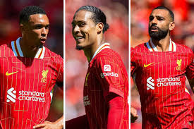

Leaving Legends:
 Three players stand out in this year's Liverpool squad, three players that have been dominant for this team for over half a decade, Mohamed Salah, Virgil Van Dijk, and Trent Alexander-Arnold. Concerns are being raised over these three fan favorite players, arising due to expiring contracts. Unless offered new contracts from the clubs owners, fans could see departures from these living club legends as early as this January transfer window.
@dailymailsport This Mo Salah chant is brilliant 👏😂 (@JudgingFootball) #dailymailsport #dailymail #sports #football #soccer #liverpool #mosalah #ynwa ♬ original sound - Daily Mail Sport